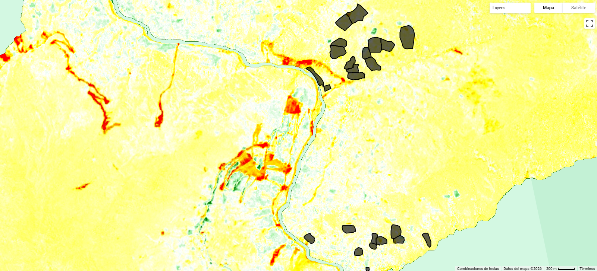
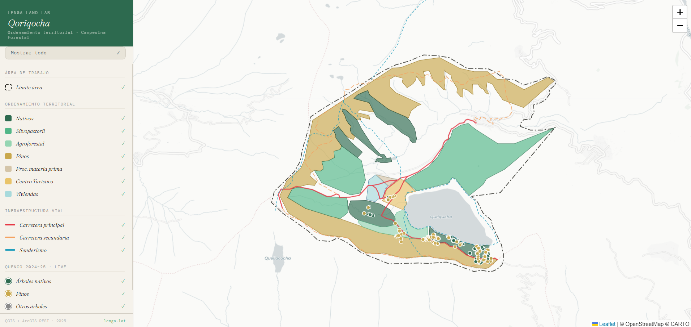
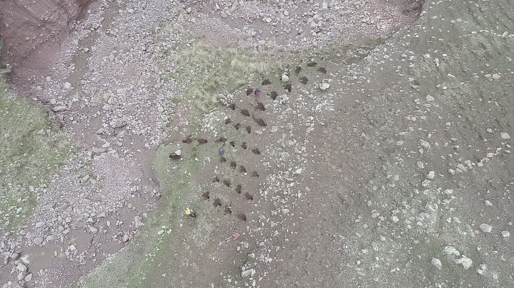
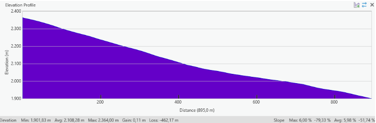
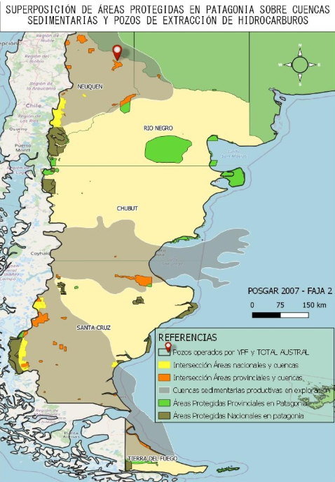

Projects

Add image: images/deforestation-alert-mapacho.jpgDeforestation Alert Report — Mapacho Basin
Multitemporal vegetation loss analysis using Sentinel-2 L2A (10 m) in Google Earth Engine, developed as an environmental compliance input for Indigenous community territories. Computed an NDVI baseline for 2024 and detected significant vegetation decline in 2025 using a ΔNDVI threshold of −0.25, applied only where vegetation was confirmed in the baseline year — filtering out phenological noise and temporary agricultural changes. Loss was quantified per community polygon in m² and hectares, then verified visually with RGB Sentinel-2 composites. Total detected loss: 0.14 ha, concentrated in two sub-watersheds (San Miguel and Sol Naciente) where low NDVI corresponded to road construction rather than deforestation. Results indicated no evidence of widespread forest loss within the study area.

Wildfire Burn Severity Assessment — North Patagonian Forests (2022 & 2025)
Spatial and temporal analysis of two wildfire events in the Bariloche Department, Río Negro, using Sentinel-2 imagery and Google Earth Engine. The Bariloche area has lost an estimated 20,000 ha of forest over the past five years, yet precise open data on burn extent and severity remains scarce — limiting both scientific analysis and community-based monitoring.
The methodology centres on the differenced Normalized Burn Ratio (dNBR), computed from pre- and post-fire Sentinel-2 composites against a 2021 baseline, to classify burn severity across the Lakes Martín, Steffen, and Los Manzanos area. Results show the 2025 event produced higher overall severity than 2022, with the most intense patches concentrated along the El Manso river valley — where terrain channelled fire spread. Spatial overlap between both fire scars identifies zones of repeated disturbance. Burn areas were vectorised using a Random Forest classifier trained on field-collected reference points and validated with a confusion matrix (Kappa). All outputs are published as an interactive, open-access GEE web app.
Lacco Valley Initiative — Coffee Traceability & Agricultural Monitoring
End-to-end GIS and data solution for a coffee cooperative operating in the Manu Biosphere Reserve. The project spanned three integrated workstreams — field data collection, client-facing traceability, and backend pipeline optimisation — connecting indigenous coffee farmers, field technicians, and end buyers within a single spatial data ecosystem.
Survey Data Collection & Agricultural Dashboard
Designed Survey123 forms to capture agricultural practices, labour dynamics, and cultural land-use data from 250+ indigenous coffee farming households. Data fed into an operational monitoring dashboard for programme staff.
Client Traceability Dashboard
Built an interactive ArcGIS Dashboard connecting buyers directly with origin farms, surfacing georeferenced farm polygons, producer profiles, and harvest data to support direct trade and supply chain transparency.
Survey Optimisation — Arcade & Backend Pipeline
Implemented Arcade expression rules within Survey123 for dynamic field logic, conditional validation, and automated calculations — reducing data entry errors and adapting form behaviour to real field conditions. Restructured the data pipeline to improve flow consistency from collection tools to the dashboard, cutting processing friction and improving dataset reliability for downstream analysis.

Add image: images/campesina-forestal.jpgTerritorial Planning — Campesina Forestal
Field data collection, spatial database management, and participatory ordenamiento territorial workshops with Indigenous Andean Highland communities. Drone mapping for orthophotos; web maps as governance outputs.

Add image: images/qquencco-orthophoto.jpgQquencco — Orthophoto & Community Boundary
Drone orthophoto production for the Indigenous community of Qquencco (Calca, Cusco). Planned flights in DroneDeploy, set GPS ground control points, digitised community boundaries absent from public geodatabases. Map printed for fieldwork.

Add image: images/elevation-profiles-lacco.jpgElevation Profiles — Lacco Irrigation Design
Terrain analysis using Digital Elevation Models (DEMs) to generate elevation profiles along primary irrigation lines. Identified optimal pressure breaker locations based on slope and head pressure calculations to ensure hydraulic efficiency and protect infrastructure longevity across the Lacco Valley network.

Add image: images/protected-areas-patagonia.jpgProtected Areas & Fossil Fuel Overlap — Patagonia
Overlay analysis quantifying the intersection of protected areas with hydrocarbon basins in Neuquén. Found 19,000+ km² of protected land within extraction basins and 151 active wells inside provincial protected areas (TOTAL AUSTRAL & YPF).